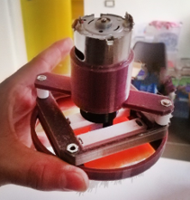
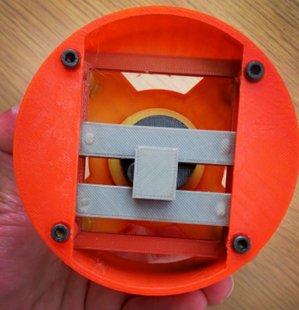
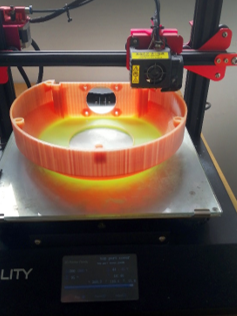
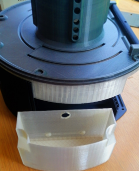
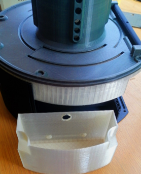
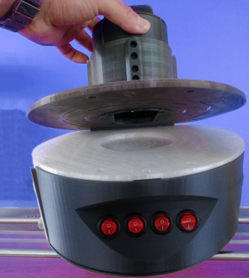
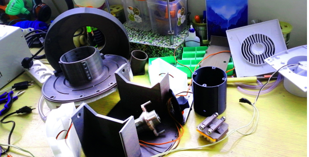

Washing Machine
Description
Small hydroelectric power station to show the principle of renewable energy and manufacturing of complex turbine blades using 3D printing. The turbine shaft is connected to a driving gear as an input to a small gear box located under the water entrance channel to transform the energy to the motor shaft.
Tasks
- Drawing 2D sketch of a vortex turbine blade with the calculated blade.
- 3D printing the first trial of the external parts with the suitable material (Temperature Based Color-Changing Filament to check for any excessive heat from electric parts or friction – Transparent filament for the water tanks)
- Assembling the external body of the prototype and the tubes with the suitable fasteners.
- Designing and 3D printing several trials of brushing mechanisms , brushes and the best speed for the brushless DC motor  
- The last task was to assemble the mechanism to the internal part in the outer body , then connecting the pumps to the buttons to control the flow of water.
- The prototype process took around a month to reach this final result after a lot of trials and experiments on different mechanisms , time of pumping water in the washing spot , the level of the brush and several challenges faced through the process

 


